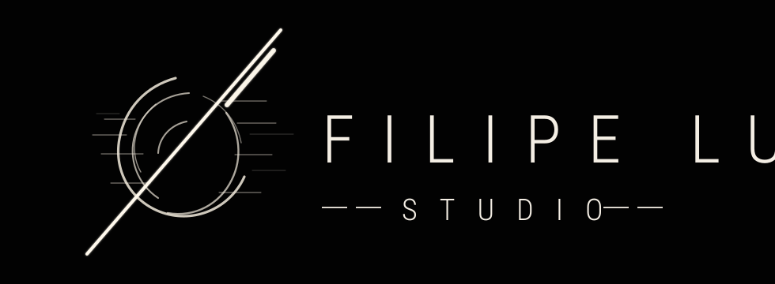

Produção audiovisual
Vídeos comerciais, campanhas promocionais e peças de impacto para produtos, serviços e marcas locais.

Estúdio criativo audiovisual • Brasil
A FILIPE LUZ STUDIO combina direção visual, estratégia, conteúdo audiovisual e tecnologia para transformar atenção em presença, valor e conversa.
Sobre
Atendemos negócios locais, prestadores de serviço, restaurantes, garden centers, transportadoras, comércio e profissionais autônomos que precisam melhorar comunicação, posicionamento e presença digital.
A inteligência artificial entra como ferramenta de produção, não como produto. O que o cliente compra é atenção qualificada, percepção de valor e oportunidade real de negócio.
“A tecnologia muda. A atenção continua valendo ouro.”
Serviços
Vídeos comerciais, campanhas promocionais e peças de impacto para produtos, serviços e marcas locais.
Conteúdo pensado para capturar atenção rápido, sustentar desejo e conduzir a audiência para o próximo passo.
Planejamento visual e produção de conteúdo para manter presença com clareza, ritmo e identidade.
Gestão de tráfego, Google Maps e presença local para facilitar descoberta, contato e conversão.
Processo
Entendemos oferta, público, região, canais e pontos de fricção na comunicação atual.
Definimos linguagem visual, mensagem central, formatos e prioridade de produção.
Executamos captação, edição, peças estáticas ou motion com acabamento premium e objetivo claro.
Organizamos publicação, anúncios ou presença local para transformar conteúdo em conversa.
Portfólio conceitual
Como esta é a primeira versão pública e não há materiais de portfólio anexados, a seção abaixo apresenta tipos de projetos que o estúdio desenvolve.
Filmes curtos com produto, oferta, ambiente e chamada para contato.
Peças para feed, stories e reels com unidade visual e linguagem direta.
Conteúdo e otimização para fortalecer presença onde o cliente procura.
Diferenciais
Cada peça nasce de uma intenção: vender, posicionar, explicar, aproximar ou gerar contato.
Contraste, textura e luz em vez de efeitos prontos, modismos e promessas vazias.
IA, automação e ferramentas digitais aceleram produção; a estratégia continua humana.
Próximo passo
Envie uma mensagem com o tipo de negócio, cidade e principal desafio de comunicação. A primeira conversa serve para entender se existe encaixe.